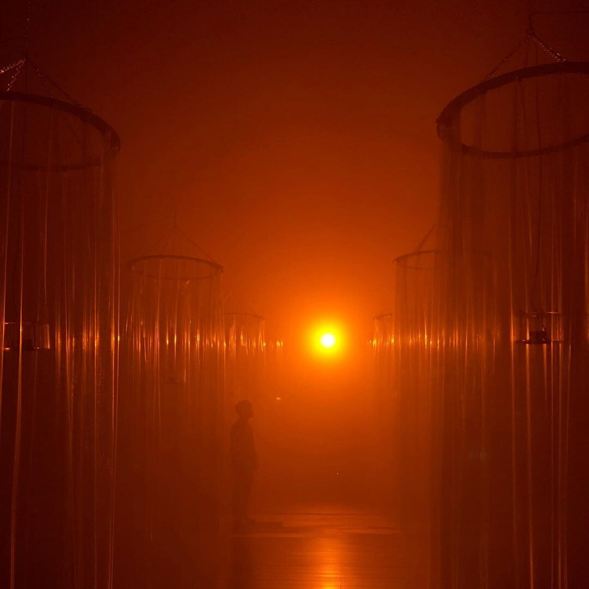
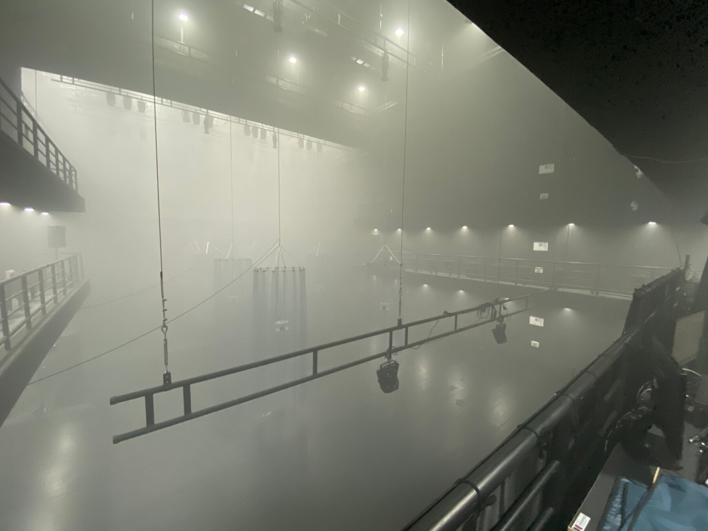
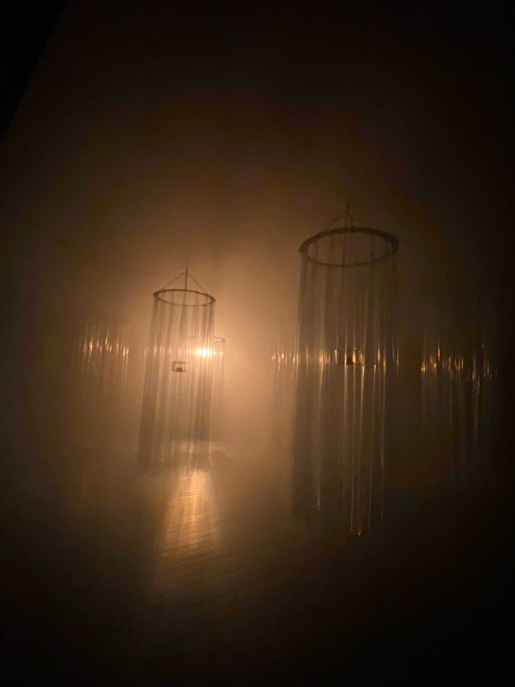
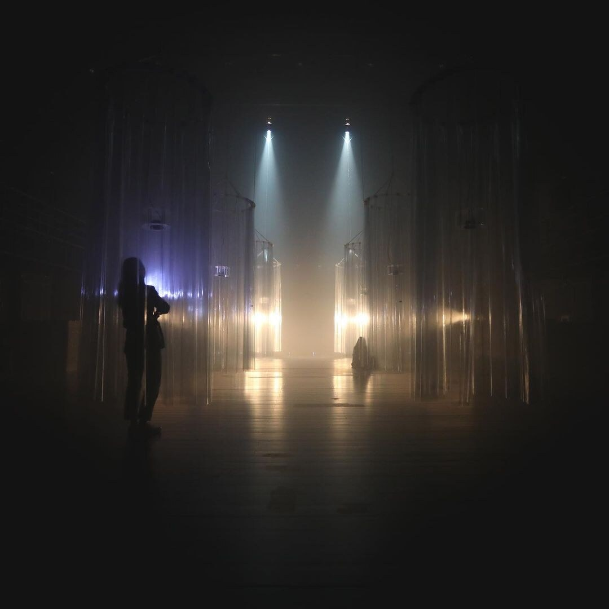

Study 01
Plastic Movement
What happens when the performer is removed and the environment itself becomes the primary presence?

Study 01
Building the environment
The suspended translucent structures, haze, and distributed light sources turned the room itself into the material of the performance. This installation view shows the spatial apparatus behind the audience experience.

Study 02
Changing states
The same physical environment could read as materially and emotionally different through changes in color, direction, intensity, and haze. The comparison became an early way of thinking about environment as an active perceptual system.

WARM STATE / environment as presence

COOL STATE / same spatial apparatus
Reflection
What this changed
This project shifted my attention from lighting as illumination toward the environment as an active participant in performance.